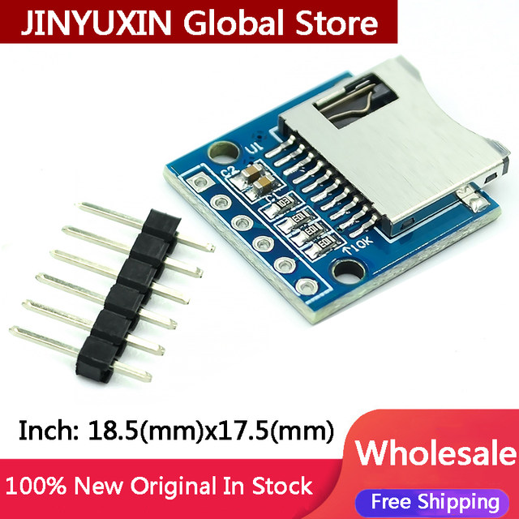
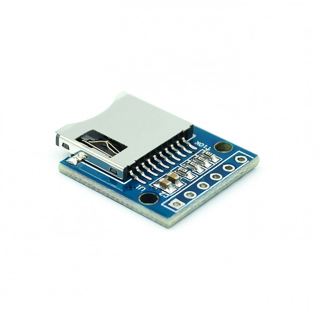
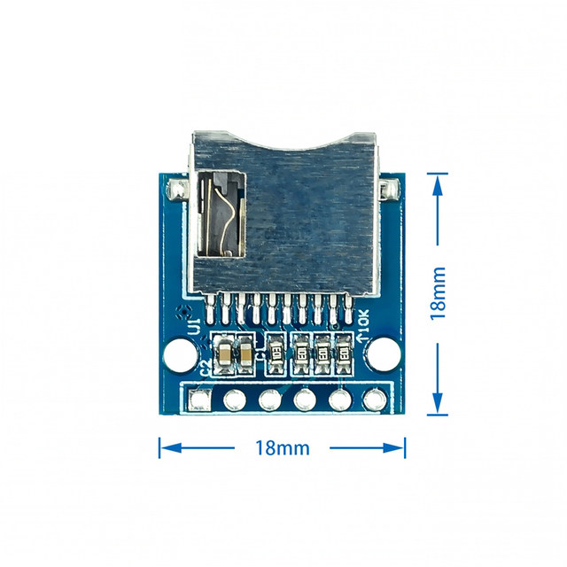
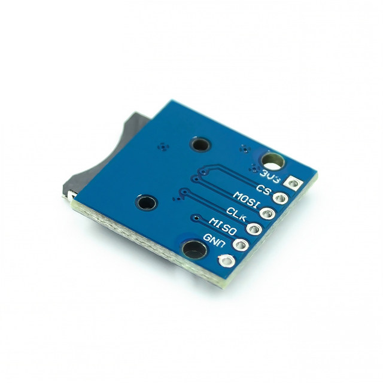

10Pcs Micro Mini SD Storage Expansion Board Mini Micro SD TF Card Memory Shield Module With Pins for Arduino
1. On-board pop-up MINI SD card interface
2. Relevant pins have been led out and marked
3. Size: 18.5 (mm) x17.5 (mm)



